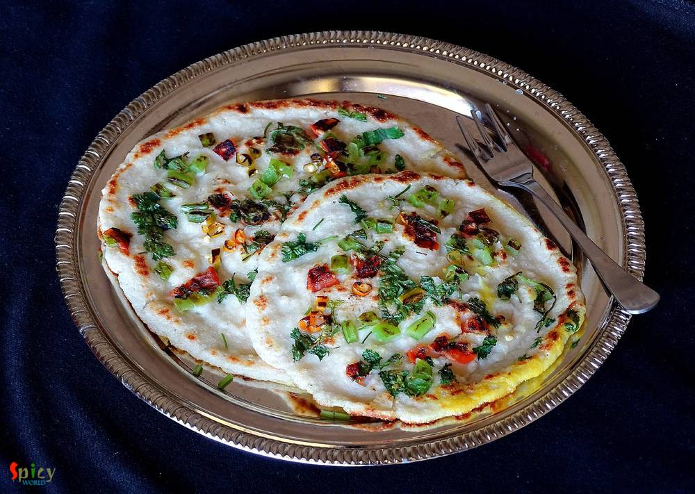

Simple and Easy Recipes

Veg Recipe
May 12, 2016
I was drawn towards this dish because of its easy method of cooking. In weekdays I never manage my time to make 'breakfast', but when I found out about this recipe where dosa batter doesn't need any farmentation ... I was interested ! You just have to rest the batter for 10 minutes, after that you can make your delicious breakfast in no time. One of the famous south indian breakfast is 'uttapam'. ...


Veg Recipe
May 11, 2016
'Pulao' plays a very significant role in Indian cuisine. Our cooking is mostly based upon 'curry' / gravy version which goes best with pulao. Their relationship is like - 'behind every tasty curry, there is a pulao' ... ???? You can never underestimate it because sometimes 'pulao' itself can be very rich and attractive like 'yakhni pulao', 'prawn pulao', 'sweet pulao' and so on. Today I am sharing ...

Nonveg Recipe
May 10, 2016
This chicken curry belongs to the category of 'dhaba food'. The gravy is very popular in Punjab and all over India. You can also make this dish with paneer or vegetables. The white, creamy texture of the gravy and beautiful aroma of fenugreek leaves will take you to heaven. I used boneless chicken for this recipe, feel free to make it with chicken on bone, it will be no issue. You can pair this di ...
")
Veg Recipe
May 9, 2016
Every family has their own breakfast story. In Bengali households, 'luchi' is the common one. Sunday mornings are meant for 'luchi - torkari'. I was never a breakfast loving person, still not. Actually for me the toughest thing is time management in the morning, always hullabaloo ! But my husband is a huge fan of 'luchi' or 'kochuri', so I have to make it once or twice in a week. I have already sh ...

Veg Recipe
May 4, 2016
Papaya is not new for any of us. We consume this fruit in both forms - raw and ripe. I love to eat ripe papaya as it is. They are so sweet and juicy, also very good for our health. Afternoons are so hot these days, almost every day I make smoothie with different type of fruits. Last week I made this 'papaya smoothie' and we loved it. It not only makes you cool but also works magically for disturbe ...

Nonveg Recipe
May 3, 2016
Few months back I saw a recipe of this 'dhaniya murgh kabab' with boneless chicken in facebook. The picture caught my eyes and then I made my mind to give it a try. But I actually got time to make it last weekend as I already had so many recipes in my drafts and to-do list. There were few changes I make with the recipe and we both got very much impressed by it's result. Smokey flavour of any type ...
 Curry")
Nonveg Recipe
May 2, 2016
There are some recipes which are classics. They don't need any upgradation. 'Kolhapuri Egg Curry' is from this category. This is a famous Maharashtrian dish in which boiled eggs are cooked into the 'kolhapuri' gravy ... it tastes million bucks ! This curry is rich + hot in taste and goes perfectly with steamed rice or plain chapatis. You can keep a large batch of this Kolhapuri masala in fridge fo ...
")
Veg Recipe
Apr 29, 2016
Mango is all over the market nowadays. Everybody loves juiciness and sweetness of mango during summer. You can make so many desserts with mango. One of my favourite among them is 'maongo mousse'. Mousse has very light and fluffy texture that's why I love to eat it. Sometimes, to me, after having heavy meals rich dessert becomes overpowering, in those case 'mousse' is very good option. I made my mo ...

Nonveg Recipe
Apr 26, 2016
Don't know about you, but I love 'keema' / mince form of meat. I have already posted so many recipes on 'keema' and this time I made paratha with mince chicken. The authentic recipe calls for 'mutton keema' but didn't have it that time, so made it with chicken and the parathas came out perfectly fine. These breads can be enjoyed with pickle, raita or any type of gravy. The recipe is very simple bu ...

Veg Recipe
Apr 25, 2016
I love to keep 'yogurt' in my fridge all through the year. Because it has so many roles in cooking. You can eat plain yogurt, make gravy / cake / dessert / drink and also it helps to marinate protien. I can never imagine a day without yogurt in my fridge. Summer is almost here and I have already started to make different types of drinks and smoothies. Among them, one of my favourite is 'chaas'. Th ...